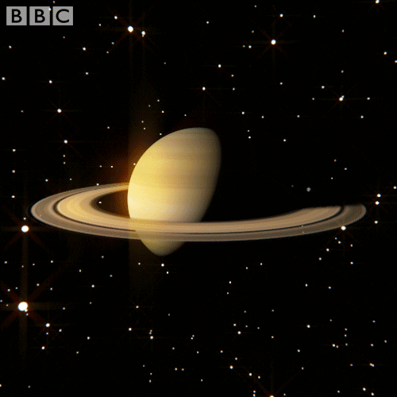

- Saturn is the sixth planet from the Sun and the second-largest in the Solar System, after Jupiter. It is a gas giant with an average radius of about nine and a half times that of Earth.
- It only has one-eighth the average density of Earth; however, with its larger volume, Saturn is over 95 times more massive.Saturn is named after the Roman god of wealth and agriculture; its astronomical symbol (♄) represents the god's sickle. The Romans named the seventh day of the week Saturday, Sāturni diēs ("Saturn's Day") no later than the 2nd century for the planet Saturn.
- Saturn's interior is most likely composed of a core of iron–nickel and rock (silicon and oxygen compounds). Its core is surrounded by a deep layer of metallic hydrogen, an intermediate layer of liquid hydrogen and liquid helium, and finally a gaseous outer layer. Saturn has a pale yellow hue due to ammonia crystals in its upper atmosphere.
-
An electrical current within the metallic hydrogen layer is thought to give rise to Saturn's planetary magnetic field, which is weaker than the Earth's, but which has a magnetic moment 580 times that of Earth due to Saturn's larger size. Saturn's magnetic field strength is around one-twentieth of Jupiter's. The outer atmosphere is generally bland and lacking in contrast, although long-lived features can appear. Wind speeds on Saturn can reach 1,800 km/h (1,100 mph; 500 m/s), higher than on Jupiter but not as high as on Neptune.
-
The planet's most famous feature is its prominent ring system, which is composed mostly of ice particles, with a smaller amount of rocky debris and dust.
-

- click here For More deatils